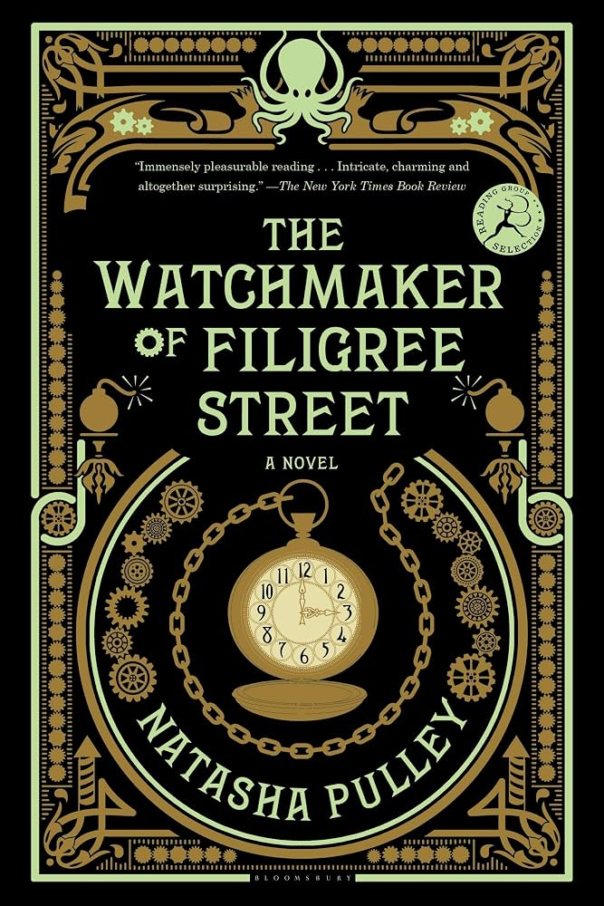
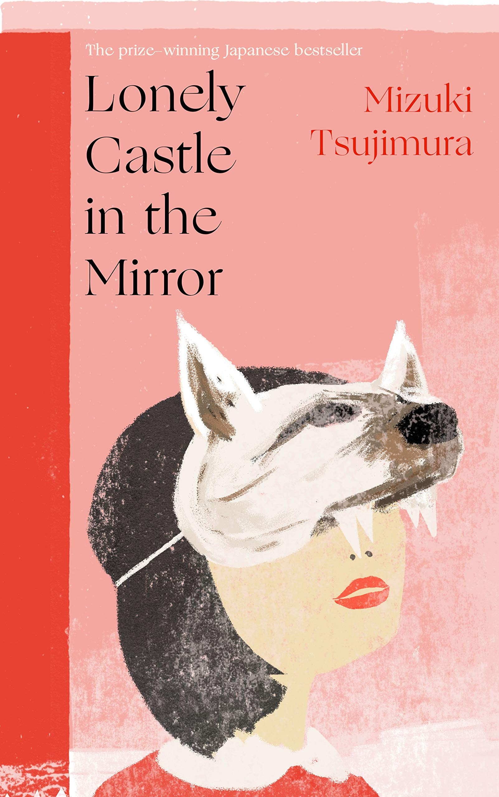
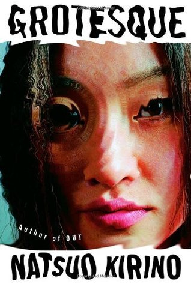

user: yuunmao
alias: emi
dob: 2000-XX-XX
zodiac: virgo ☼ scorpio ☾ aquarius ↑
mbti: infj-t
on my bookshelf




formative media
in mostly no particular orderpandora hearts • kanon 2006 • air tv • rozen maiden • shugo chara • gosick • another • zankyou no terror • akudama drive • the crow (1994) • the x-files • the matrix
motifs!
stars • hydrangeas • the color blue
other interests
birds • cinnamoroll • horror movies • indie games • alternative subcultures